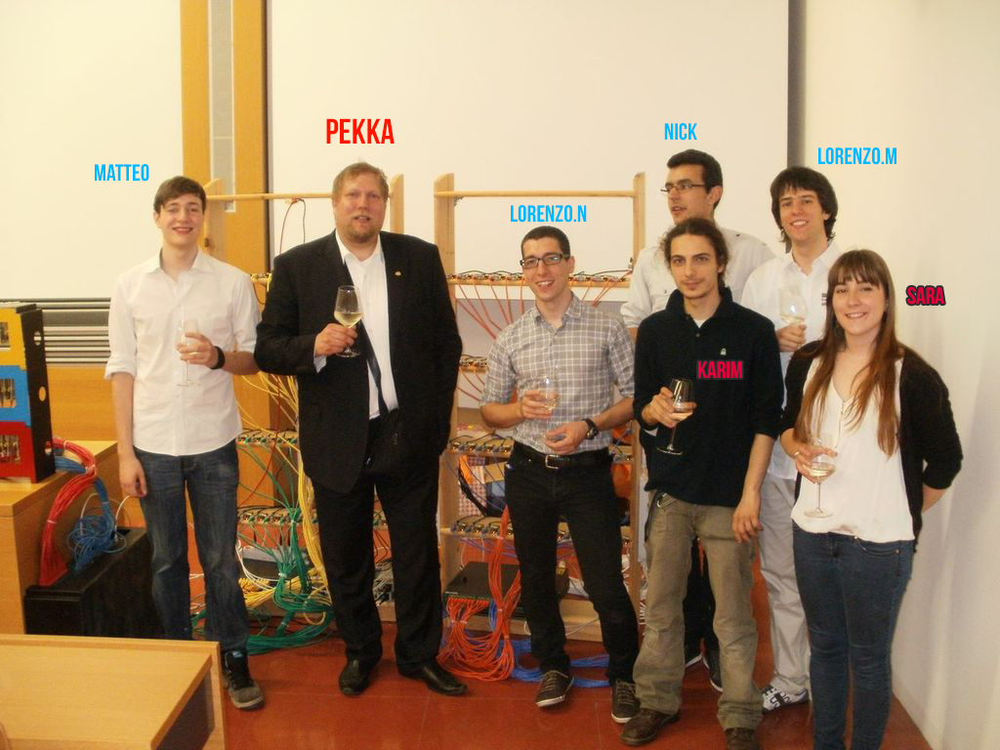
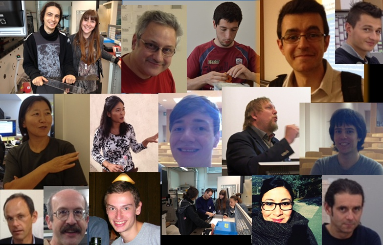

Hi Everyone!
Welcome to the backstage of the MegaRPI project leading the Bobo movement!
We are a number of students and faculty members from the Free University of Bolzano (FUB), which can be found in the sunny valleys of South Tyrol in northern most Italy.

We have an international team, which is led by Pekka Abrahamsson who is our ex-professor and ex-dean of the faculty of computer science. Pekka’s origins are in Finland. The other team members are Nick Preda, Lorenzo Miori, Julian Sanin and Matteo Angriman who are students at FUB. Nick and Lorenzo are working on the software implementation while Matteo drives the shooting of educational movies on Raspberry Pis. Julian on the other hand will magically connect the rack to the satellite! Special technical expertise is offered by a Trento based IT-specialist Lorenzo Nicolodi. We have a splendid rack design team. The second generation rack innovation was designed with great inspiration by our design students Karim Hamily and Sara Bugoloni. The Bobo design was led by an industrial designer Angelo Ventura who comes from Bolzano. Our cool look and feel for the new Bobo innovation comes from our Mexican originated designer Naomi Mastachi. Our scientific research team’s inspirational source is the database professor Sven Helmer. The PhD student Nattakarn Phaphoom strives to complete her PhD on cloud computing and participates as well. Finally, Xiaofeng Wang from our research team is our great supporter driving us to great science! In addition, we are receiving generous help from the technical experts in the University without which these types of projects are impossible to execute. The project is executed in tight collaboration with the faculties of design & arts and computer science demonstrating the great environment and atmosphere where we work.

Few words about the project. The aim of the project is to build a Cloud Computing Cluster from the scratch with a number of key qualities as the drivers. First and foremost, the Cluster should be easily affordable to acquire. In practice this means something around the cost of a MacBook Pro. Any school, institution, company and a private person should afford to buy it. As a cluster, a single instance of a cluster should carry enough capacity for the use in education, research and services. Physically, the cluster should be easily movable and it should be small sized. The rack design must stand time, be appealing and foremost it should be fit-for-the-purpose. Therefore, we place a lot of attention to the functionality of the cluster. To add to this challenge, the cluster should be auto-buildable, so anyone (all of you!) should be able to build it in less than half a day of work with material that be easily obtained from a store near you. Materials that are used should be ecological and we systematically avoid using materials with high carbon footprint (e.g. plastic). As a solution of this third generation rack design, we have introduced in our pages the “Bobo”, which carries all of the above characteristics.
Technically, we are following the latest technology trends in open source based web development such as bash scripting, python, NFS, Django, PostgreSQL. Global Bobo Cloud is our newest breakthrough innovation.
All of us can be reached at bobo.unibz@gmail.com and indvidually we are at: